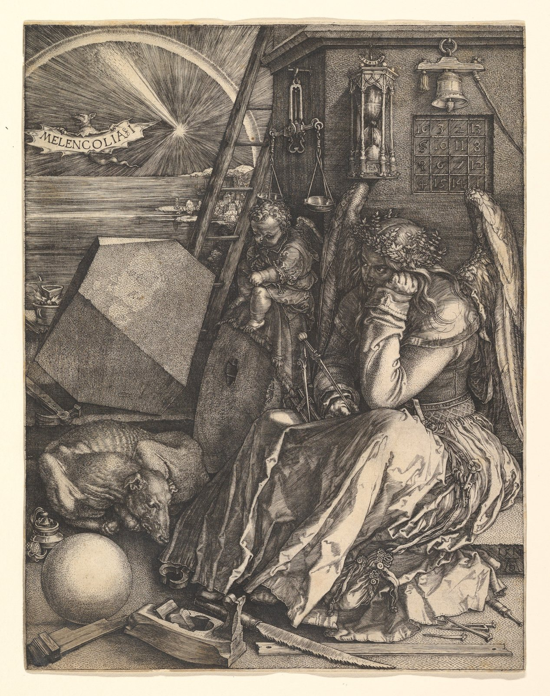

Albrecht Dürer German, Nuremberg 1471–1528 Nuremberg
Melencolia I
1514 Engraving
Price$90
- Pigment print on cotton rag; the image is 23.7 × 29.9 cm, centred on A3
- Ships rolled in a tube within five working days
50 numbered copies
A numbered edition opens on Thursday
Fifty copies on A3, each numbered in pencil, from 1/50 to 50/50. The copy you claim is held for you for ten minutes while you pay, and one that isn’t paid for goes back to the queue.
- Opens
- Thu 15 Oct, 18:00 UTC
- Price
- $180
- Limit
- One per person
About the engraving
Dürer cut Melencolia I into copper in 1514, a year after Knight, Death, and the Devil. With Saint Jerome in His Study, the three are known as his master engravings.
A winged figure sits idle among the tools of measuring and making, a compass slack in her hand. Above her hang an hourglass, a scale and a bell, beside a magic square in which every row, column and diagonal adds up to 34. Its bottom row gives the year: 15 14.
The Met’s impression was scanned at 2,820 by 3,561 pixels. That prints A3 at 302 ppi, sharp to the cross-hatching, and stops short of A2.
The museum’s record
metmuseum.org- Artist
- Albrecht Dürer, German, Nuremberg 1471–1528 Nuremberg
- Date
- 1514
- Medium
- Engraving
- Dimensions
- Plate: 9 7/16 × 7 5/16 in. (24 × 18.5 cm)
- Culture
- —
- Period
- —
- Credit line
- Harris Brisbane Dick Fund, 1943
- Object number
- 43.106.1
- Rights
- Public domain, Open Access (CC0)
- Scan
- 2,820 × 3,561 px, read from the file